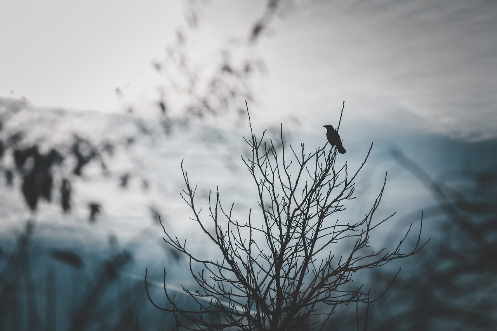

To Hold Me
Aún lidiando con la ilusión de independencia,
el narrador siempre te acompaña.

01 — UMBRAL
Con la añoranza de regresar al pasado
y el arrepentimiento de haberse permitido la enfermedad.
Carente de un hogar y temerosa del ocaso, la niña muda con cadenas busca pacientemente entre hojas y ramas el haz de luz del astro desaparecido. Tras despertar del coma recurrente, de sus memorias se ha perdido el recuerdo de la conexión que desea.
Ahora el placer de la ignorancia se opaca frente a la necesidad de obtener respuesta; sin importar que los amigos de su sombra la persigan al escapar de la cuarentena que se impuso a sí misma. Se ríen, la empujan, la agotan; quieren presenciar el llanto de la pérdida, de nuevo.
COMENZAR
"De tu mente nace el recuerdo de los últimos días luminosos de los que fuiste testigo.
Inciertas y borrosas, las memorias se conciben como destellos que traen euforia al
pensamiento. Y de tu corazón surge el significado en el recuerdo..."
Recopilatorio
Mis mejores intenciones frente a la inspiración.
Sutilezas
(Aún no publicado)
03 — ARCHIVO
En honor a la construcción del mundo y sus personajes.
Espacio para los fragmentos, las imágenes y los detalles que forman parte del universo de la novela.
ARCHIVO EN CONSTRUCCIÓN...